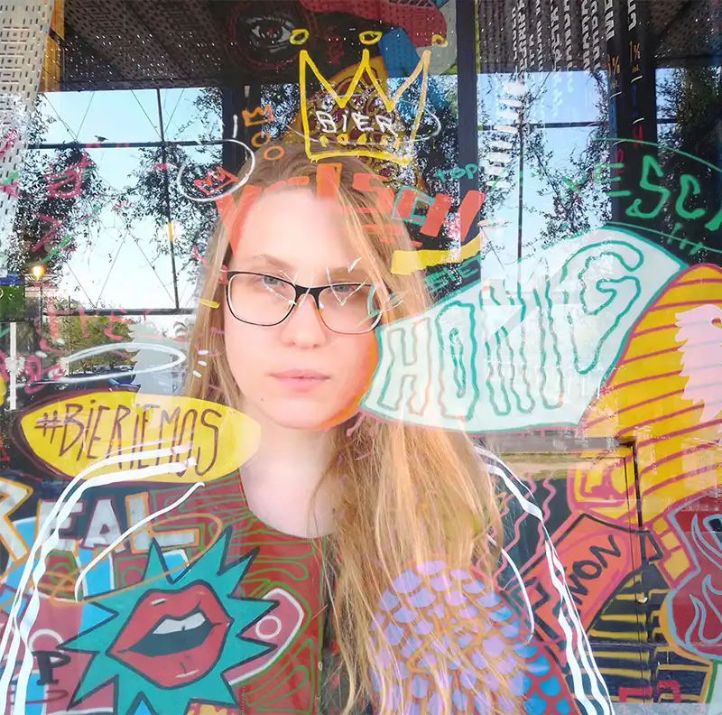

Un poco sobre mí
Nací y me crie en Santa Fe, Argentina.
Soy técnica en arreglos musicales egresada de la UNL, y fotógrafa freelance de la escena underground de Santa Fe.
En mi trabajo con la fotografía profesional trato de unir dos de mis intereses que más me movilizan, por eso me dedico a la fotografía de bandas musicales o artistas, donde trato de transmitir lo mismo que los músicos hacen arriba del escenario.
